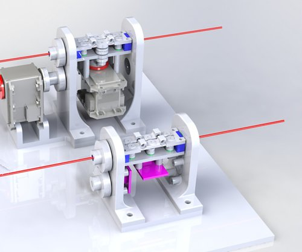

Academic bedside robots · hamlyn_driver_rafiitari2013
Hamlyn driver
Hamlyn hands-on robotic catheter driver for learning from demonstration (pre-CathBot)

1 / 8


- Family
- Academic bedside robots (academic)
- Devices
- one standard catheter (operator handles the guidewire manually in the 2013 shared-control scheme)
- Degrees of freedom
- 2 (axial, rotational)
- Push
- Friction rollers
- Twist
- Rotating drive unit
- Tested up to
- Phantom
- Sim-to-real
- None found — No simulation-trained controller found for this robot.
Testing
- Highest level
- Phantom
- What was tested
- 2013: 12 robotic cannulations per learned model (expert and intermediate) across 4 inexperienced operators; 2018: cross-validation over three type-I aortic-arch phantoms under dry, continuous and pulsatile flow, forces vs four experts
- Key numbers
- 2018 success 98.1% dry and 94.4% continuous flow; mean contact force -33.3% and force SD -70.6% vs manual (chi2018 abstract)
Mechanism
- Push (translation)
- friction-roller (pair of friction wheels coupled to one servomotor)
- Twist (rotation)
- second servomotor rotates the frame that holds the catheter; two Dynamixel MX-28 servomotors, PID (rafiitari2013 Sec. 2.3; chi2018 Sec. Experiments)
- Device range
- N.R.
- Target anatomy
- aortic arch cannulation (innominate, left common carotid) in silicone phantoms
Sensing and interface
- Force sensing
- none on the driver; ATI Mini40 6-DOF sensor under the phantom for evaluation (chi2018)
- Leader and haptics
- hands-on master: proximal position-sensing unit that reads natural catheter motions (two DOF); no force feedback in these papers
- Imaging
- NDI Aurora 6-DOF EM sensor at the tip; 2-D projected image for the operator
- Sterility
- N.R.
Size
- Footprint (mm)
- N.R.
- Mass (kg)
- N.R.
Simulation
- Simulation model
- none found
- Sim-trained controller
- none found (policies learned from real phantom demonstrations)
Versions
- Lineage
- 2012 IROS force-feedback system for catheterisation (Payne, title only); 2013 MICCAI GMM/GMR learning with the driver; 2014 MICCAI hierarchical-HMM cooperative catheterisation; 2018 IJCARS non-rigid-registration trajectory transfer; from 2020 the Hamlyn LfD work runs on CathBot (chi2020_collaborative uses 'the CathBot system')
Sources
- Learning-Based Modeling of Endovascular Navigation for Collaborative Robotic Catheterization · Lecture Notes in Computer Science, 2013 · doi:10.1007/978-3-642-40763-5_46 [rafiitari2013_learningbased]
- Hierarchical HMM Based Learning of Navigation Primitives for Cooperative Robotic Endovascular Catheterization · Lecture Notes in Computer Science, 2014 · doi:10.1007/978-3-319-10404-1_62 [rafiitari2014_hierarchical]
- Learning-based endovascular navigation through the use of non-rigid registration for collaborative robotic catheterization · International Journal of Computer Assisted Radiology and Surgery, 2018 · doi:10.1007/s11548-018-1743-5 [chi2018_learningbased]
- A force feedback system for endovascular catheterisation · 2012 IEEE/RSJ International Conference on Intelligent Robots and Systems, 2012 · doi:10.1109/iros.2012.6386149 [payne2012_force]
- Collaborative Robot-Assisted Endovascular Catheterization with Generative Adversarial Imitation Learning · 2020 IEEE International Conference on Robotics and Automation (ICRA), 2020 · doi:10.1109/icra40945.2020.9196912 [chi2020_collaborative]
Notes
- Notes
- Answers A3's open question: the Hamlyn LfD hardware 2013-2018 was this in-house driver, not Sensei/Magellan; Chi 2020 (GAIL) used CathBot.
This record
- Read level
- full — full (rafiitari2013, rafiitari2014, chi2018); title (Payne 2012)
- Picture
- rafiitari2014_hierarchical_hmm_primitives_MICCAI Fig. 1(d) (CAD: slave catheter driver with servo, and master position-sensing unit) ↗ — licence: publisher copyright (Springer LNCS); grade C
- Picture changes
- native extract (788x869); cropped to exclude panel letter and Slave/Master labels; 189 px pointer-line remnant at the left edge replaced by background copied from 16 px above; not upscaled
- Found by
- gap: Gap searches for robots the other searches missed.
- Data
- JSON · YAML:
records/robots/hamlyn_driver_rafiitari2013.yaml - Correction
- Suggest a correction [repository not created yet]